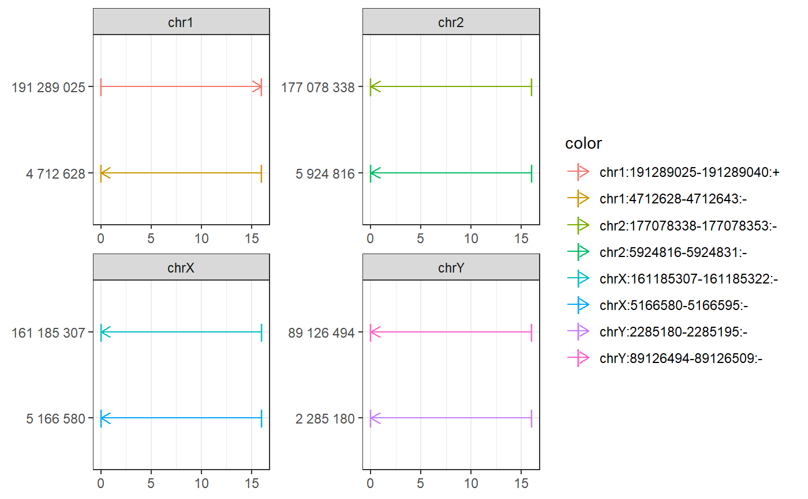
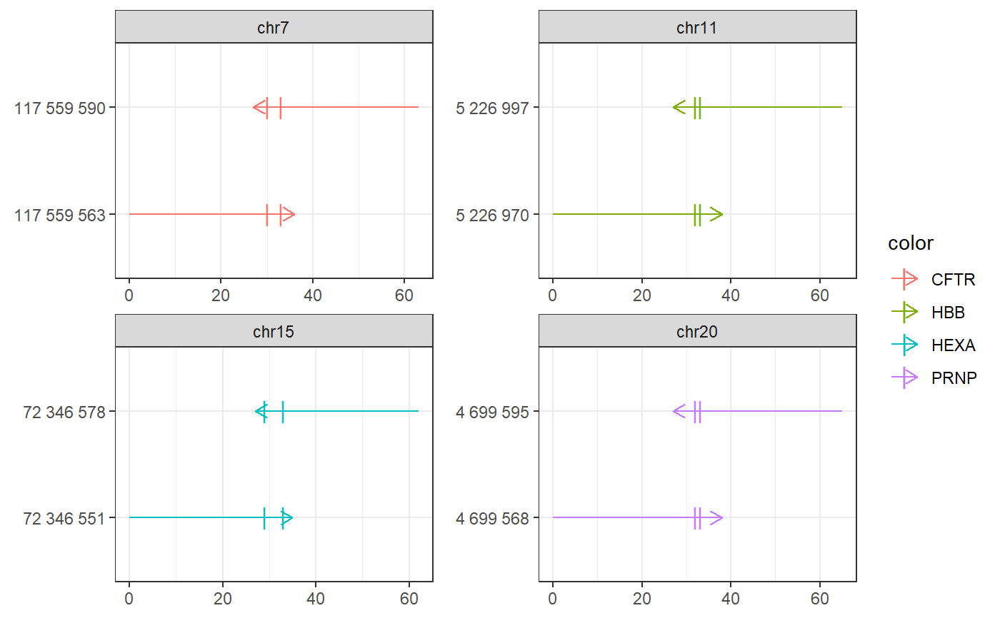

Interval plot GRanges
plot_intervals.RdInterval plot GRanges
plot_intervals( gr, xref = "targetname", y = default_y(gr), nperchrom = 2, nchrom = 4, color_var = "targetname", facet_var = "seqnames", linetype_var = default_linetype(gr), size_var = default_size_var(gr), alpha_var = default_alpha_var(gr), title = NULL, scales = "free" )
Arguments
| gr | |
|---|---|
| xref | gr var used for scaling x axis |
| y | 'names' (default) or name of gr variable |
| nperchrom | number (default 1): n head (and n tail) targets shown per chromosome |
| nchrom | number (default 6) of chromosomes shown |
| color_var | 'seqnames' (default) or other gr variable |
| facet_var | NULL(default) or gr variable mapped to facet |
| linetype_var | NULL (default) or gr variable mapped to linetype |
| size_var | NULL (default) or gr variable mapped to size |
| alpha_var | NULL or gr variable mapped to alpha |
| title | NULL or string: plot title |
| scales | 'free', 'fixed', etc |
Value
ggplot object
See also
Examples
# SRF sites require(magrittr) bsgenome <- BSgenome.Mmusculus.UCSC.mm10::BSgenome.Mmusculus.UCSC.mm10 bedfile <- system.file('extdata/SRF.bed', package = 'multicrispr') targets <- bed_to_granges(bedfile, 'mm10', plot = FALSE)#>#>plot_intervals(targets)# PE targets bsgenome <- BSgenome.Hsapiens.UCSC.hg38::BSgenome.Hsapiens.UCSC.hg38 gr <- char_to_granges(c(PRNP = 'chr20:4699600:+', HBB = 'chr11:5227002:-', HEXA = 'chr15:72346580-72346583:-', CFTR = 'chr7:117559593-117559595:+'), bsgenome) spacers <- find_primespacers(gr, bsgenome, plot = FALSE)#>#>#>#>#>#>#>#>#>#>#>#>#>#>#>#>#>#>#>#>#>#>#>#>#>#>#>#>#>#>#>#>#>#>#>#>#>#>#>#>#>#>#>#>#>plot_intervals(gr)plot_intervals(spacers)#> Warning: Removed 34 rows containing missing values (geom_point).#> Warning: Removed 34 rows containing missing values (geom_point).